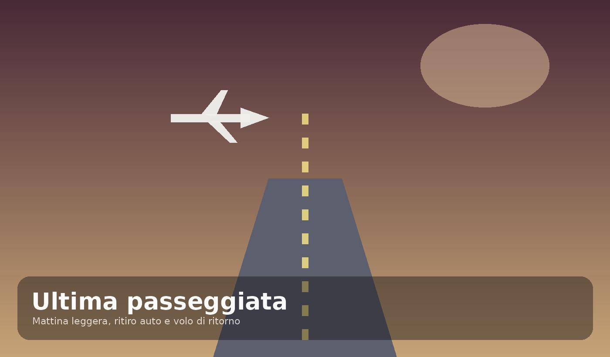

Bordeaux 2026
Quattro giorni tra città e Médoc
Il master completo in versione premium per iPhone.

Il master completo in versione premium per iPhone.


Posizione centrale, comoda per Grand Théâtre, Triangle d’Or e le passeggiate del centro.


La visita enologica principale del viaggio. Il sito ufficiale indica visite lun–sab, durata 1h30 e tariffa 25 € p.p.
Sito ufficiale
Pomeriggio volutamente libero: Mouton, Lafite, Saint-Estèphe, Saint-Julien, carrelets e Margaux.
Tre ore dedicate alla cultura del vino e al Belvédère.

La parte più autentica e quotidiana di Bordeaux.
2 rue de Condé · Bordeaux
FISSATORitiro e riconsegna aeroporto BOD
CONFERMATA€78,46
DEFINITIVO